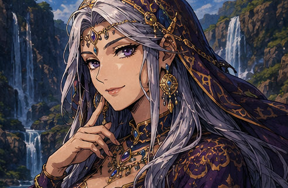

THE WATERFALL TRIAL
اختبار الشلال
أي مهنة مغامرة تناسبك؟

«اقترب أيها المسافر…
اجلس عند الشلال وأجب بصدق، فالماء لا يُخدَع.
محارب؟ ساحر؟ لص؟ … أم شيء أندر من ذلك؟»
⩔ اضغط للبدء ⩔
Q1
عرّافة الشلال
تلميح: تقدر تختار بأزرار الأرقام 1‑4
★ نتيجة نادرة ★
الشلال قرأ روحك… ومهنتك هي:
لماذا تناسبك هذه المهنة؟
⚔️ نقاط القوة
🕳️ نقاط الضعف
نسبة توافقك مع المهن:
🔍 اضغط على البطاقة لتكبيرها